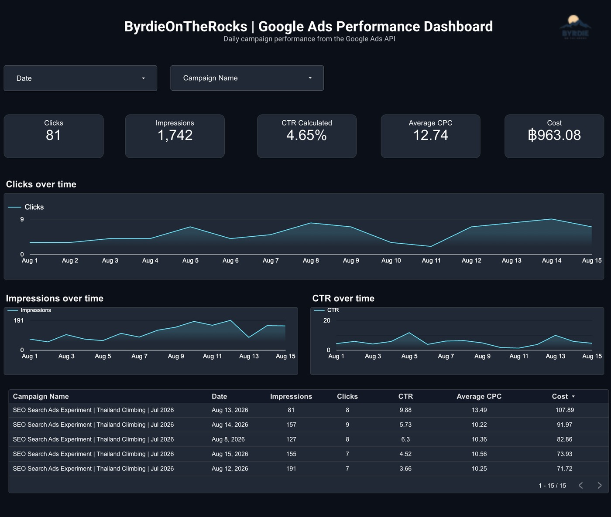
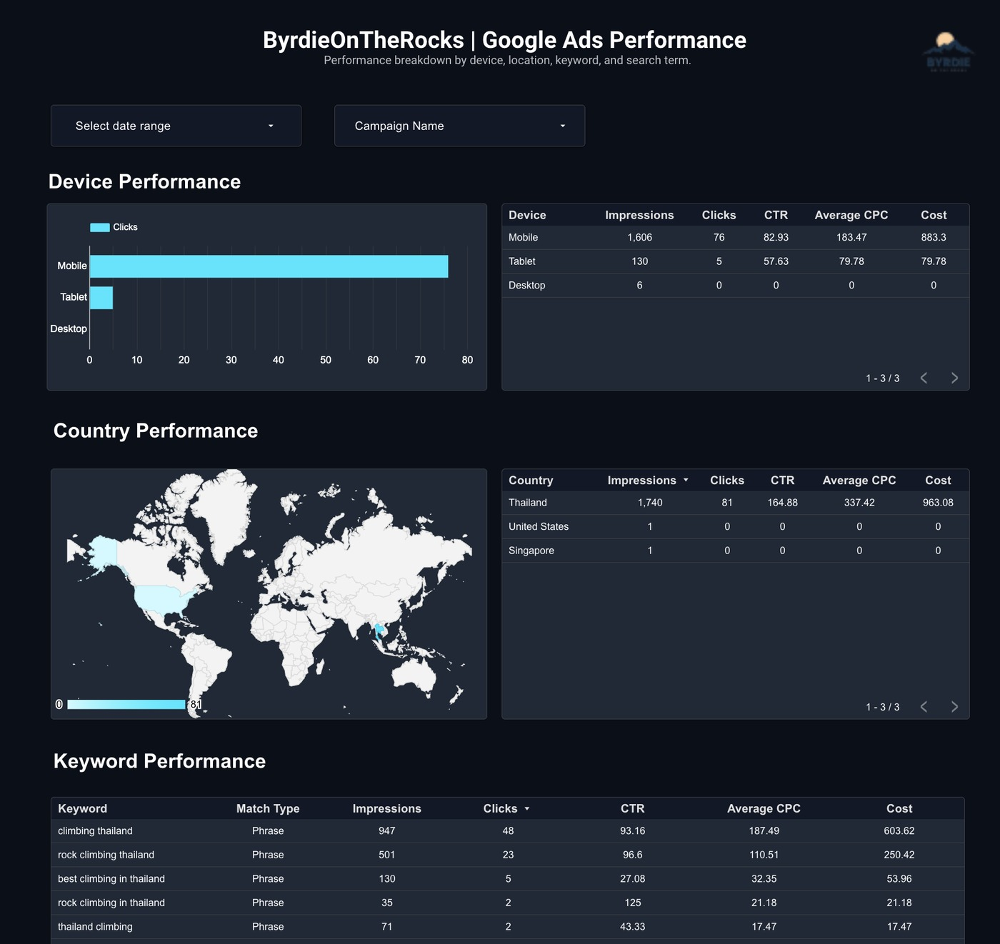

Marketing Analytics & Automation
Google Ads Marketing Pipeline
Automated Campaign Reporting and Performance Dashboard
Project Overview
This project builds an automated marketing analytics pipeline for Google Ads campaign reporting.
Instead of manually exporting campaign reports, I used the Google Ads API and Python to retrieve advertising data, process it with Pandas, and automatically upload structured reporting tables to Google Sheets.
The reporting tables then feed a Looker Studio dashboard, creating an end-to-end workflow for monitoring campaign performance and exploring different dimensions of the data.
What I Wanted to Build
- Automate Google Ads campaign reporting using the Google Ads API.
- Retrieve campaign performance without manually exporting reports.
- Organize campaign, keyword, search term, device, and country data.
- Send processed reporting data automatically to Google Sheets.
- Use the reporting tables as data sources for an interactive Looker Studio dashboard.
Workflow
The project connects several tools into one automated marketing reporting workflow:
Google Ads API → Python & Pandas → Google Sheets → Looker Studio
Python modules handle different reporting areas, including campaign, keyword, search term, device, and country performance. Each dataset is processed and uploaded to its own reporting table in Google Sheets.
Those tables are then connected to Looker Studio, where the campaign data can be monitored and explored through dashboard views and performance breakdowns.
Approach
- Connected Python to the Google Ads API.
- Used GAQL queries to retrieve advertising performance data.
- Built separate Python modules for campaign, keyword, search term, device, and country reporting.
- Processed and structured the API responses using Pandas.
- Automated uploads to dedicated Google Sheets reporting tabs.
- Connected the reporting tables to Looker Studio.
- Built dashboard views for monitoring overall campaign performance and individual performance dimensions.
Key Results
Automated Reporting Pipeline
The project replaced repetitive manual report exports with a reusable Python workflow that retrieves, processes, and publishes Google Ads performance data for dashboard reporting.
Campaign Performance
The first campaign generated 1,742 impressions and 81 clicks, with approximately 963 THB in advertising spend.
Multiple Reporting Dimensions
The pipeline makes it possible to analyze performance beyond campaign-level totals by breaking results down by keywords, search terms, devices, and countries.
Dashboard Preview

Performance Breakdown
Campaign performance by device, country, and keyword, providing a more detailed view of where clicks and impressions came from.

Campaign Overview
Daily campaign performance showing clicks, impressions, CTR, average CPC, advertising spend, and performance trends over time.
What I Learned
This project helped me move from analyzing exported marketing reports to building the reporting workflow itself.
I gained hands-on experience working with the Google Ads API, GAQL, Python modules, Pandas, Google Sheets, and Looker Studio as parts of one end-to-end marketing analytics pipeline.
It also gave me a better understanding of how automated data pipelines can make recurring campaign reporting more consistent, reusable, and easier to maintain.
Data & Privacy
The public version of this project focuses on the pipeline, reporting structure, and implementation.
Credentials, authentication tokens, advertising account IDs, and sensitive raw advertising data are excluded from the public repository.
Explore the Project
The Python pipeline, project structure, documentation, and implementation details are available on GitHub.
← Back to Projects